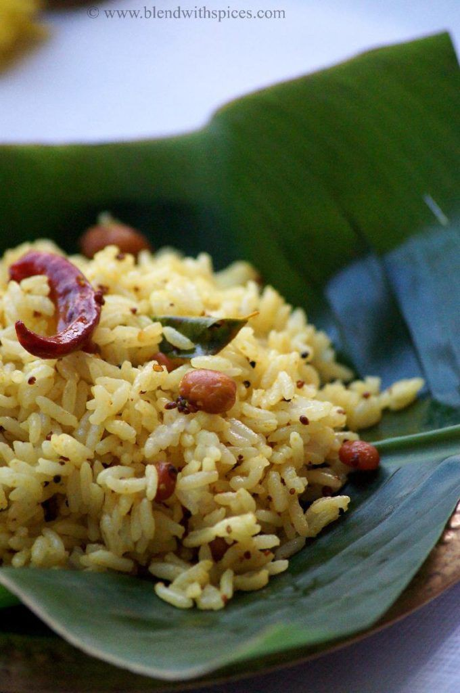
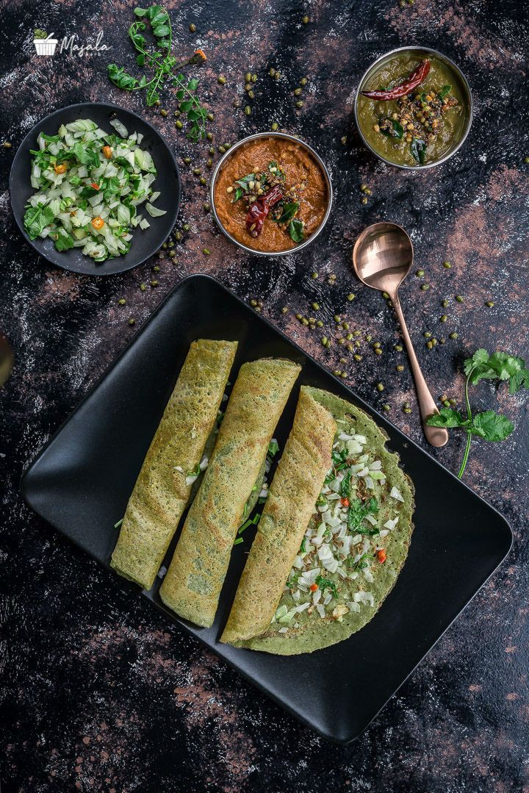
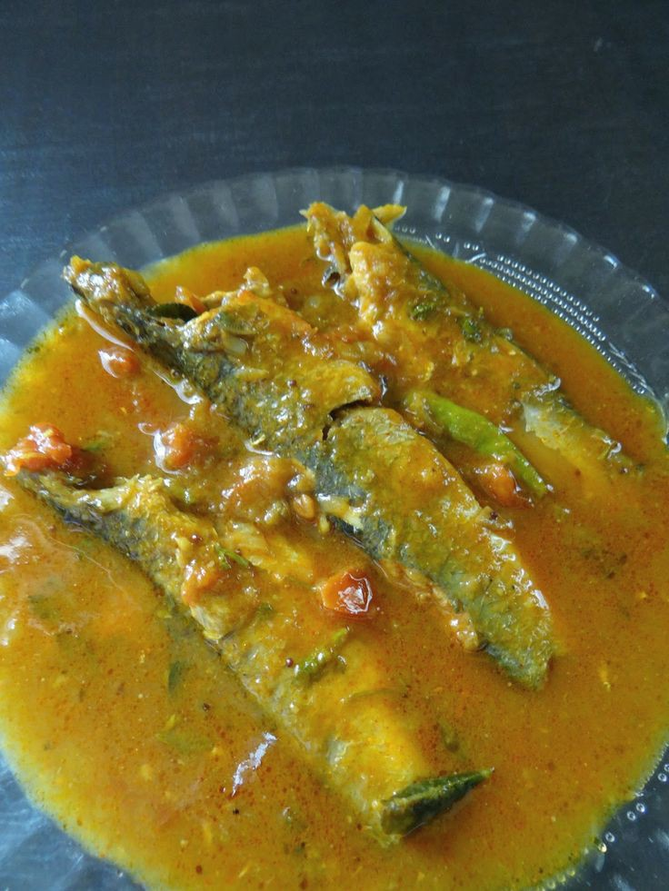
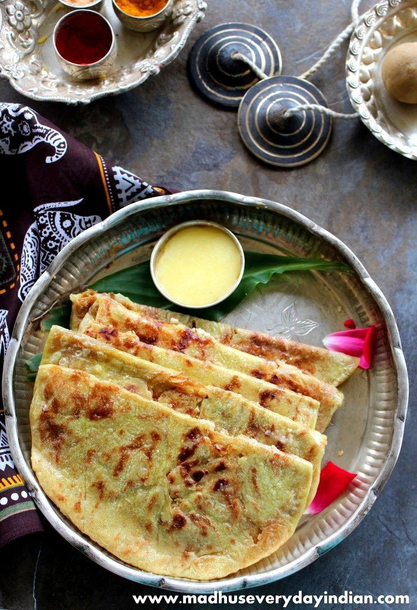

Andhra Pradesh
Andhra pradesh is known for its spicy food all around the country.The inspiration behind such delicious variations of food lies in the opulent culture of the state, where exotic food is behind prepared in the kitchen of the newabs since the year of its origin.We bring to you, a variety of delicious dishes, you must eat at least once in your lifetime!
Ulavu charu
Pulihora |
Chepa pulusu
Pesarattu
Bobbatlu |